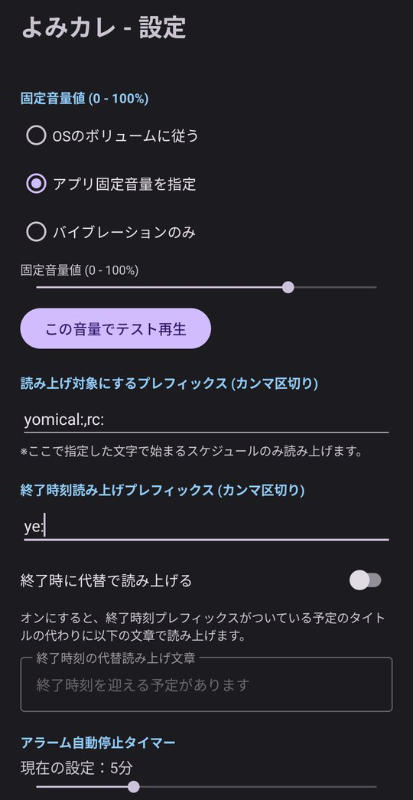
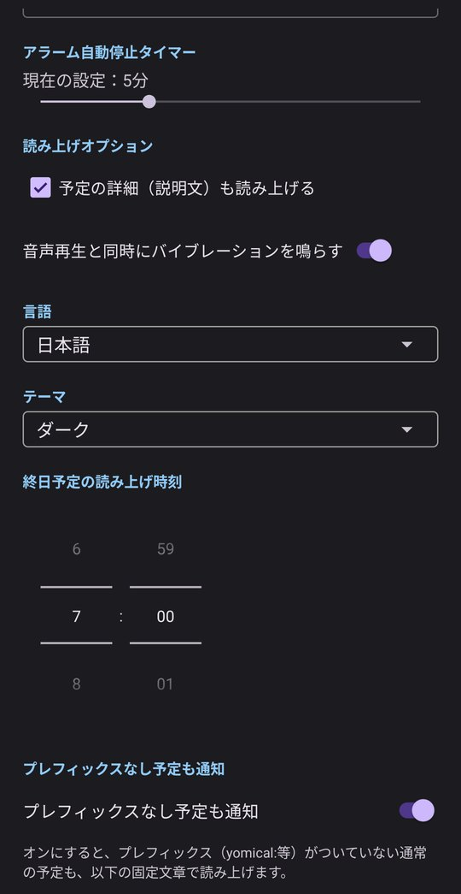
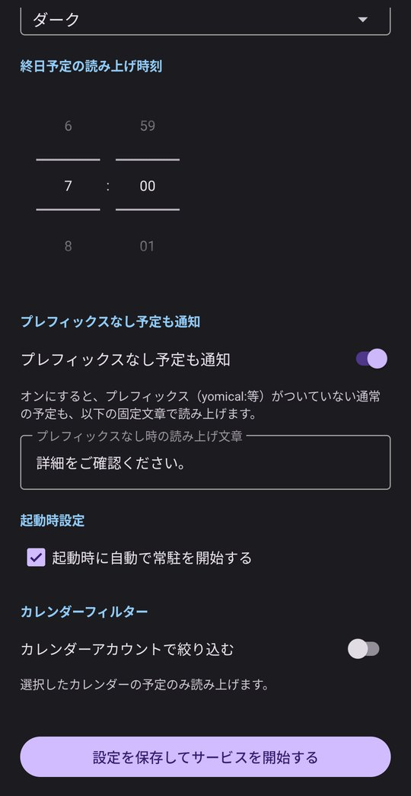

よみカレって何？
Google カレンダーの予定を、設定した音量でTTSが読み上げる。
ただ、それだけのAndroid用のアプリケーションです。
特徴
Google カレンダーの予定を、設定した通知時刻に、指定の音量でTTSが読み上げます。
音で鳴らすだけでなく「何の予定か」を声で伝えるので、以下のようなトラブルを防げます。
カレンダーあるある
- 予定の通知音が短すぎる・小さすぎて気づかない。
- 予定の終了時刻を知らせるために、別の予定を追加する手間・漏れ。
- マナーモードにより、通知に気づかない。
- 勝手にサイレントモードになっていて気づかない。
- 通知欄に予定が出ていても気づかない。
- 予定の時刻にアラーム音を設定したが、何の予定だったか思い出せない。
- アラーム音だと、とっさに止めてしまい、予定があったことを忘れる。
よみカレなら、決まった音量で予定の内容そのものを読み上げるので、聞き逃しを防げます。
設定できる内容

音量設定
読み上げるときの音量の決め方を選びます。
- OSのボリュームに従う：端末の音量設定のまま読み上げます。
- アプリ固定音量を指定：端末の音量に関係なく、下のスライダーで決めた音量（0〜100%）で読み上げます。
- バイブレーションのみ：音は出さず、バイブレーションだけでお知らせします。
「この音量でテスト再生」で、実際の聞こえ方を確認できます。
読み上げ対象にするプレフィックス（カンマ区切り）
ここで指定した文字で始まる予定だけを読み上げます。複数指定する場合はカンマ（,）で区切ります。
※プレフィックスの末尾にコロン（:）を付けるかどうかで、プレフィックスを読み上げるかを選べます。
- コロンあり（例：
yomical:）… プレフィックスは読み上げません。「yomical:歯医者」→「歯医者」 - コロンなし（例：
会議）… プレフィックスも読み上げます。「会議 定例」→「会議 定例」
yomical:,rc: と設定し、カレンダーに「yomical:歯医者」と予定を登録すると、その予定が読み上げ対象になります。終了時刻読み上げプレフィックス（カンマ区切り）
ここで指定した文字で始まる予定は、終了時刻に読み上げます。終了を知らせるための予定を別に追加する必要がありません。
開始と終了のプレフィックスに共通した値を指定することで予定の前後で読み上げます。
※プレフィックスの末尾にコロン（:）を付けるかどうかで、プレフィックスを読み上げるかを選べます。
- コロンあり（例：
yomical:）… プレフィックスは読み上げません。「yomical:歯医者」→「歯医者」 - コロンなし（例：
会議）… プレフィックスも読み上げます。「会議 定例」→「会議 定例」
ye: と設定し、「ye:会議」と登録すると、会議の終了時刻にもお知らせします。終了時に代替で読み上げる
オンにすると、終了時刻プレフィックスがついている予定のタイトルの代わりに、指定した文章で読み上げます。
文章の例：「終了時刻を迎える予定があります」

アラーム自動停止タイマー
お知らせを自動で止めるまでの時間を、スライダーで設定します。止め忘れても、設定した時間が過ぎると自動で停止します。
画面の例：5分
読み上げオプション
- 予定の詳細（説明文）も読み上げる：タイトルに加えて、予定の説明欄の内容も読み上げます。
- 音声再生と同時にバイブレーションを鳴らす：読み上げと一緒に端末を振動させます。
言語
アプリの表示言語を選びます。
テーマ
画面の配色（ダークなど）を選びます。
終日予定の読み上げ時刻
終日予定には開始時刻がないため、何時に読み上げるかをここで指定します。
画面の例：7:00

プレフィックスなし予定も通知
オンにすると、プレフィックス（yomical: など）がついていない通常の予定も、指定した固定文章で読み上げます。
文章の例：「詳細をご確認ください。」
起動時設定
「起動時に自動で常駐を開始する」にチェックを入れると、端末の再起動後も自動でよみカレが動き始めます。
カレンダーフィルター
「カレンダーアカウントで絞り込む」をオンにすると、選択したカレンダーの予定だけを読み上げます。
設定を保存してサービスを開始する
設定を変更したら、画面下のこのボタンを押してください。設定が保存され、読み上げサービスが開始します。
動作について
読み上げについて
- セキュリティ上の観点により、指定したプレフィックスの予定のみ読み上げます。
- セキュリティ上の観点により、指定したメールアドレスに紐づく予定のみ読み上げることができます。
- 同時刻帯に複数の予定がある場合、開始時刻が早いものから読み上げます。
プレフィックス無しの予定を読み上げる場合
- 同時刻帯にプレフィックスの無い予定が複数ある場合は、予定が何件あるかを読み上げます。
通知欄について
- 常駐を開始した後、常駐の解除は通知欄から行えます。Androidの起動時に自動で常駐を開始した場合も同様です。
- 次の予定を読み上げる必要がない場合は、スキップできます。
- 読み上げ開始時の通知からスヌーズできます。5分後に読み上げを再開します。
- 読み上げている内容を画面に表示して確認できます。
- 読み上げ時刻が過ぎた予定も後から確認できます。
待機画面について
- 読み上げ時には、アラームのように画面が表示されます。スヌーズと停止ボタンで操作できます。
- 読み上げ時間が経過した後も画面は残るため、読み上げた予定があったことを確認できます。
ご注意：アラーム（時計アプリなど）と同時に動作した場合、時刻どおりに読み上げられないことがあります。